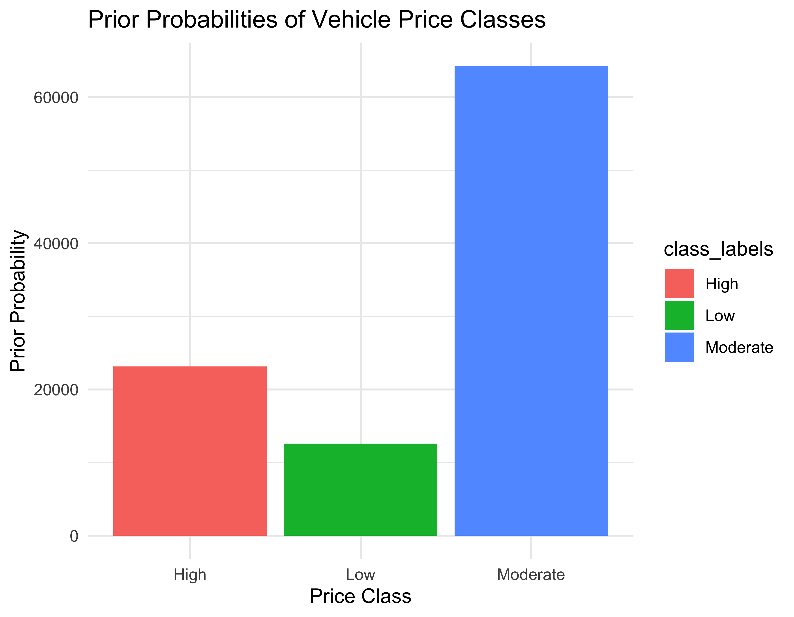
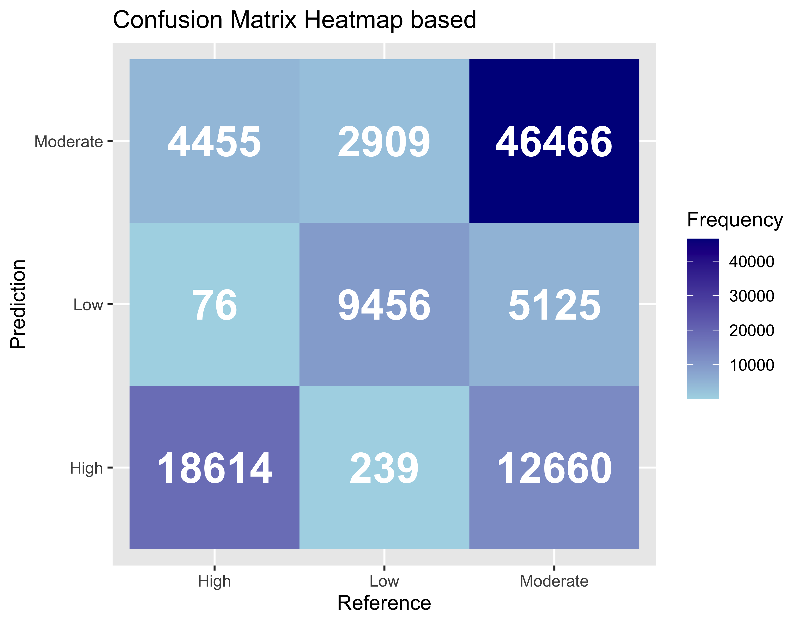

Build a Naïve Bayes model based on the preprocessed data. First, the features used in the model include all the independent variables in the dataset, and we build a Naïve Bayes model based on them. Here are the characteristics of the vehicles in the dataset.
| horsepower | The horsepower of a vehicle is an important characteristic that directly affects the performance and power of the vehicle. |
| torque_lbft | Torque represents the power of a vehicle, and is an important factor in a vehicle's acceleration and power, especially when climbing rocks in the mountains. |
| fuel_tank_volume | A large fuel tank volume represents better mileage and fuel economy. |
| mileage | The mileage indicates the condition and frequency of use of the vehicle, and a high mileage can indicate the durability and endurance of the vehicle. |
| year | The age of the vehicle indicates the condition and performance of the vehicle, and newer models are more likely to include new technology and improved features. |
| highway_fuel_economy | Fuel economy is a characteristic that directly affects the cost of ownership and operation; more efficient fuel consumption can reduce the cost of ownership. |
The dependent variable, vehicle price, is categorized into three classes (Low, Moderate, and High), and the vehicle price is classified based on the prior probability of the class and the conditional probability of the given vehicle characteristics for each class. To classify vehicle prices based on the training dataset, we first perform a Naïve Bayes classification, including all vehicle characteristics. The class prior probabilities obtained from this classification model result are shown below.
In simple terms, the bar plot above shows the percentage of the total data that each class represents, meaning that the Moderate class has the highest prior probability, followed by the Low class, and the High class has the lowest prior probability. From this, it can be seen that the Moderate class has the most data and the High class has the least, indicating that there is an imbalance between the classes.
$horsepower horsepower Y High Horsepower Low Horsepower Medium Horsepower Very High Horsepower High 0.312508101 0.002808382 0.083949017 0.600734500 Low 0.189240657 0.474252162 0.285011505 0.051495676 Moderate 0.246688767 0.302454437 0.310952359 0.139904437 $torque_lbft torque_lbft Y High Torque Low Torque Medium Torque High 0.734586304 0.007690646 0.257723050 Low 0.138855828 0.563834008 0.297310164 Moderate 0.221926507 0.432678091 0.345395402 $fuel_tank_volume fuel_tank_volume Y Large Fuel Tank Medium Fuel Tank Small Fuel Tank High 0.70836034 0.22894794 0.06269173 Low 0.19558835 0.34214076 0.46227089 Moderate 0.22205102 0.34492848 0.43302050 $mileage mileage Y High Mileage Low Mileage Medium Mileage Very High Mileage High 0.21711891 0.41876944 0.29869513 0.06541652 Low 0.11607426 0.01626468 0.04046334 0.82719772 Moderate 0.28814456 0.23505424 0.27354511 0.20325608 $highway_fuel_economy highway_fuel_economy Y HW Fuel Economy Average HW Fuel Economy Good HW Fuel Economy Poor High 0.39987038 0.05210629 0.54802333 Low 0.37755912 0.45754642 0.16489446 Moderate 0.47453696 0.36982101 0.15564202 $year year Y 1989 1991 1992 1993 1994 1995 1996 1997 1998 1999 2000 High 0.000000e+00 0.000000e+00 4.320588e-05 0.000000e+00 0.000000e+00 4.320588e-05 0.000000e+00 8.641175e-05 1.296176e-04 4.320588e-05 4.320588e-05 Low 0.000000e+00 7.933989e-05 1.586798e-04 7.933989e-05 2.380197e-04 3.173596e-04 7.933989e-05 2.380197e-04 5.553792e-04 3.966995e-04 2.142177e-03 Moderate 1.556396e-05 0.000000e+00 0.000000e+00 1.556396e-05 3.112792e-05 0.000000e+00 3.112792e-05 1.556396e-05 1.556396e-05 6.225584e-05 3.112792e-05 year Y 2001 2002 2003 2004 2005 2006 2007 2008 2009 2010 2011 High 8.641175e-05 0.000000e+00 4.320588e-05 8.641175e-05 8.641175e-05 1.728235e-04 4.320588e-04 6.048823e-04 2.160294e-04 4.752646e-04 5.616764e-04 Low 2.300857e-03 3.252936e-03 4.839733e-03 8.013329e-03 1.134560e-02 1.848619e-02 2.895906e-02 3.998731e-02 3.657569e-02 6.251983e-02 8.108537e-02 Moderate 6.225584e-05 1.867675e-04 1.400756e-04 2.178954e-04 2.178954e-04 3.735350e-04 8.093259e-04 1.105041e-03 1.494140e-03 3.066100e-03 6.241148e-03 year Y 2012 2013 2014 2015 2016 2017 2018 2019 2020 2021 High 1.123353e-03 2.894794e-03 6.264852e-03 2.125729e-02 4.761288e-02 2.955714e-01 2.354288e-01 2.549147e-01 1.317779e-01 0.000000e+00 Low 1.034592e-01 1.255950e-01 1.318629e-01 1.225801e-01 9.179626e-02 6.323389e-02 2.983180e-02 2.975246e-02 2.380197e-04 0.000000e+00 Moderate 1.014770e-02 2.200744e-02 3.682433e-02 5.800688e-02 9.447324e-02 3.487261e-01 1.734759e-01 2.048062e-01 3.730681e-02 9.338376e-05 $wheelbase wheelbase Y Long Wheelbase Medium Wheelbase Short Wheelbase Very Long Wheelbase High 0.28006049 0.10473104 0.04748326 0.56772521 Low 0.15488376 0.24383083 0.48893121 0.11235420 Moderate 0.25400383 0.20483728 0.37893574 0.16222316 $owner_count owner_count Y 1 2 3 4 5 6 7 8 9 10 High 8.824800e-01 1.001944e-01 1.378267e-02 2.592353e-03 6.048823e-04 2.592353e-04 4.320588e-05 4.320588e-05 0.000000e+00 0.000000e+00 Low 3.841638e-01 3.943193e-01 1.578070e-01 4.577912e-02 1.293240e-02 3.252936e-03 1.507458e-03 2.380197e-04 0.000000e+00 0.000000e+00 Moderate 7.863380e-01 1.754370e-01 3.105010e-02 5.556334e-03 9.960934e-04 4.513548e-04 1.400756e-04 0.000000e+00 1.556396e-05 1.556396e-05 | cs |
The results above show the conditional probability of each class on the vehicle characteristics, indicating the probability that a vehicle in a given class's price category has a particular characteristic value. This allows you to compare the class-specific probabilities for each value of each characteristic to assess how important the characteristic is to classification. It also allows you to see how the probability of being classified into a particular class changes with other characteristic values. Let's look at the conditional probabilities for a few key characteristics. First, if the conditional probability of 'horsepower' for each price category (Low, Moderate, and High) is examined, it can be seen that the 'High' price category contains many vehicles with high horsepower. If the difference in the distribution of 'horsepower' across each price category is examined, the largest difference is between the 'Low' and 'High' price categories. The conditional probability results for Mileage also show that vehicles with High Mileage have the highest probability of being in the 'High' class, while Low Mileage and Very High Mileage have a high probability of being in the 'Low' class. Medium Mileage has a high probability for the 'Moderate' class. For 'torque_lbft', it is observed that 'High' class vehicles tend to have high torque values, while 'Low' class vehicles have relatively low torque values. For 'fuel_tank_volume', it is observed that 'High' class vehicles mostly have large fuel tanks, while 'Low' class vehicles mostly have small fuel tanks. 'Moderate' class vehicles are more likely to have medium-sized fuel tanks. For 'highway_fuel_economy', it appears that 'High' class vehicles mostly have large fuel tanks, while 'Low' class vehicles mostly have small fuel tanks. 'Moderate' class vehicles are more likely to have medium-sized fuel tanks. 'year' may have a different distribution of vehicle classes in a given year. For example, a significant increase in the probability of 'High' class vehicles can be observed in 2017 and 2018. Regarding 'wheelbase', the wheelbase of the vehicle can play an important role in dividing the classes: 'High' class vehicles mostly have a very long wheelbase, while 'Low' class vehicles are more likely to have a short wheelbase. Finally, for 'owner_count', the number of owners a vehicle has can play a role in determining its class: 'High' class vehicles are likely to have one owner, while 'Low' class vehicles are likely to have multiple owners.
The predictions were run on the test dataset and the results were evaluated as follows.
Confusion Matrix and Statistics Reference Prediction High Low Moderate High 18614 239 12660 Low 76 9456 5125 Moderate 4455 2909 46466 Overall Statistics Accuracy : 0.7454 95% CI : (0.7426, 0.7481) No Information Rate : 0.6425 P-Value [Acc > NIR] : < 2.2e-16 Kappa : 0.5475 Mcnemar's Test P-Value : < 2.2e-16 Statistics by Class: Class: High Class: Low Class: Moderate Sensitivity 0.8042 0.75024 0.7232 Specificity 0.8322 0.94049 0.7940 Pos Pred Value 0.5907 0.64515 0.8632 Neg Pred Value 0.9338 0.96311 0.6148 Prevalence 0.2314 0.12604 0.6425 Detection Rate 0.1861 0.09456 0.4647 Detection Prevalence 0.3151 0.14657 0.5383 Balanced Accuracy 0.8182 0.84536 0.7586 | cs |
Based on the results above, the confusion matrix can be visualized as follows.
Based on the above results, the classification accuracy for the given data is about 0.7454, which means that 74.54% of the total observations were correctly classified. Regarding Sensitivity and Specificity, values for the sensitivity and specificity of the 'High', 'Low', and 'Moderate' classes are provided. The sensitivity is relatively high for the 'High' and 'Low' classes, while the sensitivity of the 'Moderate' class is close to unknown. Looking at the Pos Pred Value and Neg Pred Value, values for the positive and negative predictive values for the 'High', 'Low', and 'Moderate' classes are provided, indicating the reliability of the prediction for each class. Also, looking at the confusion matrix, the accuracy and error of the prediction for the 'High', 'Low', and 'Moderate' classes are evident. There needs to be more clarity between the 'Low' and 'Moderate' classes, especially for the 'Low' class, which is often misclassified as the 'Moderate' class. Based on this confusion matrix, four metrics related to the evaluation of this model were calculated: Accuracy, Precision, Recall, and F1-score.
| Features | Class | Accuracy | Precision | Recall | F1_Score |
|---|---|---|---|---|---|
| . | Low | 0.74536 | 0.8042342 | 0.5906769 | 0.6811080 |
| . | Moderate | 0.74536 | 0.7502380 | 0.6451525 | 0.6937383 |
| . | High | 0.74536 | 0.7231950 | 0.8631990 | 0.7870191 |
The results above represent the percentage of data that the model correctly predicted. For precision, which is the percentage of samples predicted to be positive that are actually positive, 80.42%, 75.02%, and 72.32% are obtained for the Low, Moderate, and High classes, respectively. For recall, the percentage of samples predicted to be positive that is actually positive by the model, 59.07%, 64.52%, and 86.32%, are obtained for the Low, Moderate, and High classes, respectively. Finally, F1 scores of 68.11%, 69.37%, and 78.70% are seen for the Low, Moderate, and High classes, respectively. The insight from these results is that the High class has the highest precision and recall scores, indicating that the model is proficient at identifying data belonging to the High class. The 'Low' class has a lower recall and higher precision, suggesting that the model tends to correctly identify samples belonging to the 'Low' class but often misses actual 'Low' class samples. The 'Moderate' class has a moderate balance of precision and recall, indicating that the model predicts the 'Moderate' class relatively well but is less accurate than the 'High' class.
The above results from including all the columns in the dataset and the analysis shows that some models need to improve their performance. To do this, an analysis is performed to assess how the models would perform if only some of the vehicle characteristics were selected instead of all of them. The table below shows the results of performing a Naïve Bayes classification using a combination of different vehicle characteristics.
| Features | Class | Accuracy | Precision | Recall | F1_Score |
|---|---|---|---|---|---|
| horsepower + torque_lbft | Low | 0.68904 | 0.7138043 | 0.5587648 | 0.6268402 |
| horsepower + torque_lbft | Moderate | 0.68904 | 0.0000000 | NaN | NaN |
| horsepower + torque_lbft | High | 0.68904 | 0.8152869 | 0.7437281 | 0.7778652 |
| horsepower + torque_lbft + fuel_tank_volume | Low | 0.66653 | 0.8339166 | 0.5017808 | 0.6265541 |
| horsepower + torque_lbft + fuel_tank_volume | Moderate | 0.66653 | 0.0000000 | NaN | NaN |
| horsepower + torque_lbft + fuel_tank_volume | High | 0.66653 | 0.7369846 | 0.7695133 | 0.7528978 |
| horsepower + torque_lbft + fuel_tank_volume + mileage | Low | 0.73019 | 0.7923094 | 0.5903677 | 0.6765916 |
| horsepower + torque_lbft + fuel_tank_volume + mileage | Moderate | 0.73019 | 0.3636941 | 0.6657952 | 0.4704192 |
| horsepower + torque_lbft + fuel_tank_volume + mileage | High | 0.73019 | 0.7797077 | 0.8073260 | 0.7932765 |
| horsepower + torque_lbft + fuel_tank_volume + mileage + year | Low | 0.77680 | 0.8095917 | 0.6505572 | 0.7214137 |
| horsepower + torque_lbft + fuel_tank_volume + mileage + year | Moderate | 0.77680 | 0.7529356 | 0.6647520 | 0.7061012 |
| horsepower + torque_lbft + fuel_tank_volume + mileage + year | High | 0.77680 | 0.7696690 | 0.8687831 | 0.8162282 |
| horsepower + torque_lbft + fuel_tank_volume + mileage + year + highway_fuel_economy | Low | 0.76644 | 0.8002160 | 0.6219066 | 0.6998829 |
| horsepower + torque_lbft + fuel_tank_volume + mileage + year + highway_fuel_economy | Moderate | 0.76644 | 0.7534116 | 0.6723308 | 0.7105657 |
| horsepower + torque_lbft + fuel_tank_volume + mileage + year + highway_fuel_economy | High | 0.76644 | 0.7568287 | 0.8668687 | 0.8081199 |
| horsepower + torque_lbft + fuel_tank_volume + mileage + year + highway_fuel_economy + wheelbase | Low | 0.75076 | 0.7930006 | 0.5790819 | 0.6693654 |
| horsepower + torque_lbft + fuel_tank_volume + mileage + year + highway_fuel_economy + wheelbase | Moderate | 0.75076 | 0.7184227 | 0.7088618 | 0.7136102 |
| horsepower + torque_lbft + fuel_tank_volume + mileage + year + highway_fuel_economy + wheelbase | High | 0.75076 | 0.7418873 | 0.8583854 | 0.7958959 |
| horsepower + torque_lbft + fuel_tank_volume + mileage + year + highway_fuel_economy + wheelbase + owner_count | Low | 0.74536 | 0.8042342 | 0.5906769 | 0.6811080 |
| horsepower + torque_lbft + fuel_tank_volume + mileage + year + highway_fuel_economy + wheelbase + owner_count | Moderate | 0.74536 | 0.7502380 | 0.6451525 | 0.6937383 |
| horsepower + torque_lbft + fuel_tank_volume + mileage + year + highway_fuel_economy + wheelbase + owner_count | High | 0.74536 | 0.7231950 | 0.8631990 | 0.7870191 |
In the results above, among the different models, the combination "horsepower + torque_lbft + fuel_tank_volume + mileage + year" has the highest accuracy of 0.77680, which is better than the model that includes all the vehicle characteristics. While the features in this dataset were all selected through correlation, the fact that the best performance came from a combination of a few key features suggests that more features do not necessarily mean better performance. In other words, by reducing the number of features, the complexity of the model can be reduced, leading to better performance because it is easier to interpret and more generalizable. The combination "horsepower + torque_lbft + fuel_tank_volume + mileage + year" may be more concise and better able to generalize because it was constructed considering essential characteristics. Also, including all characteristics may cause the model to overfit the data and fail to generalize to other data, resulting in inaccurate predictions of new data. For these reasons, it was found that a model consisting of five features representative of the vehicle had the best accuracy. This can also be interpreted to mean that these variables strongly impact the price of the vehicle.